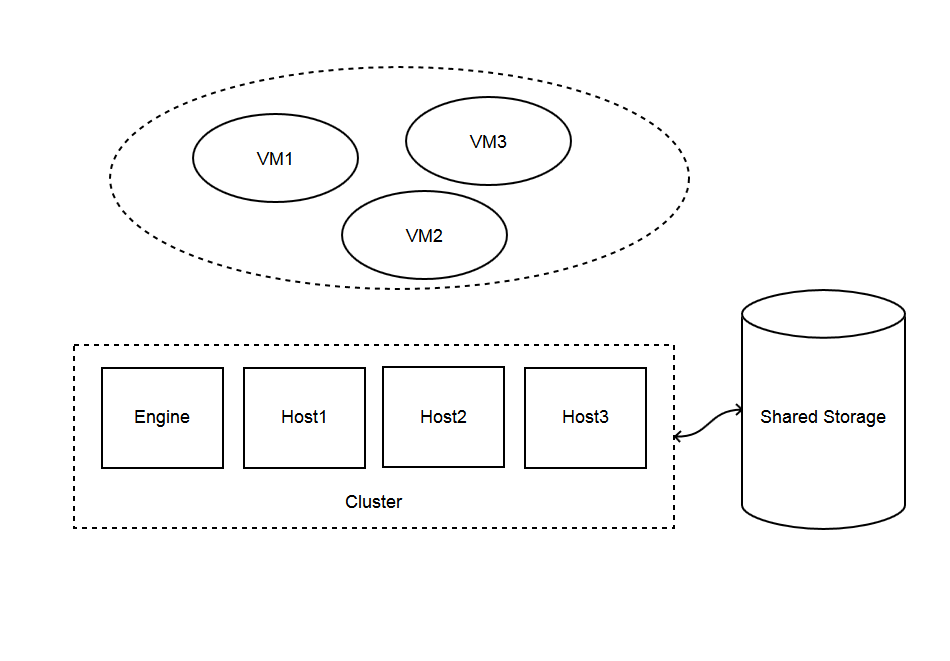
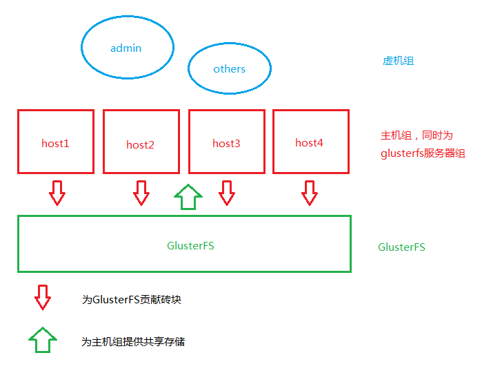
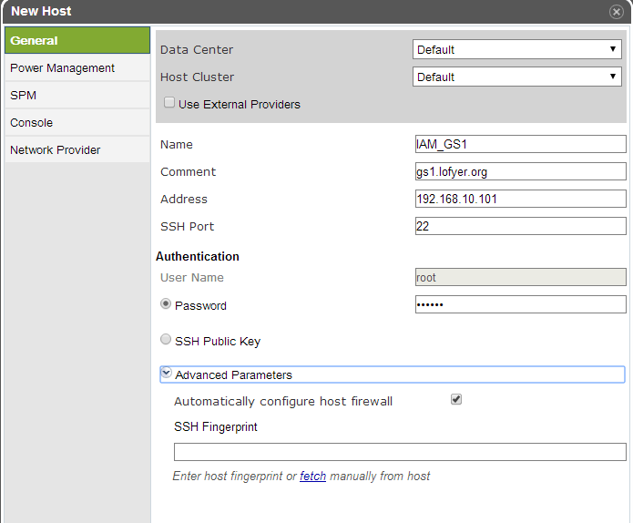
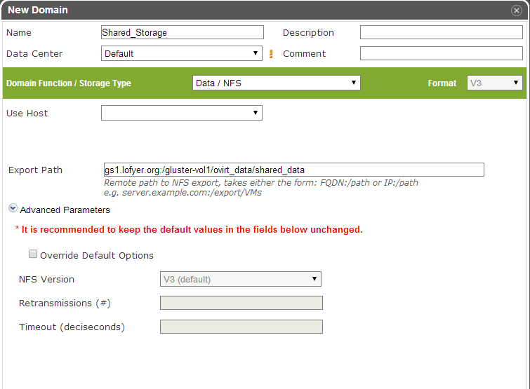
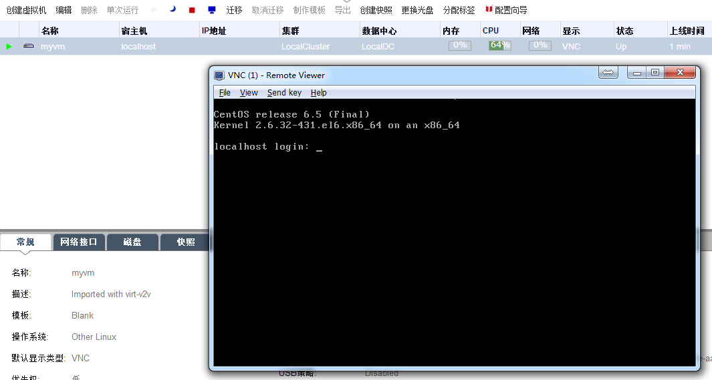
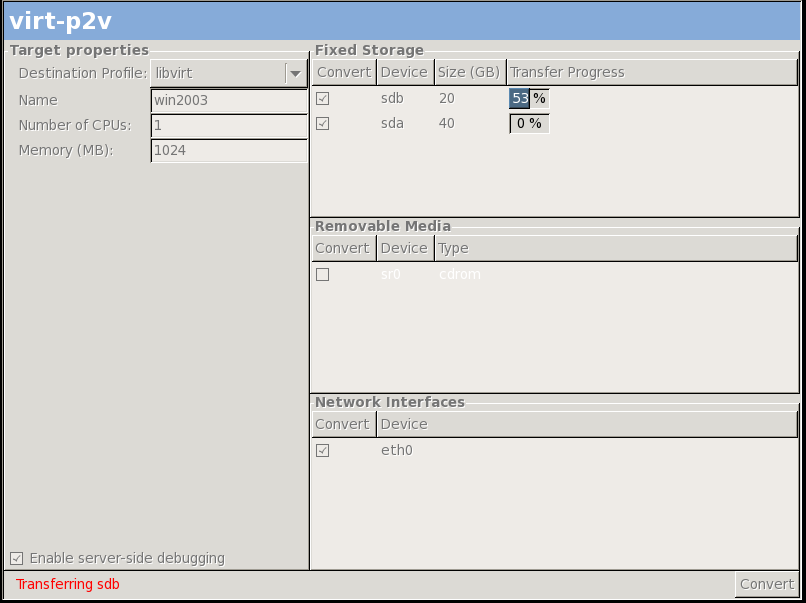
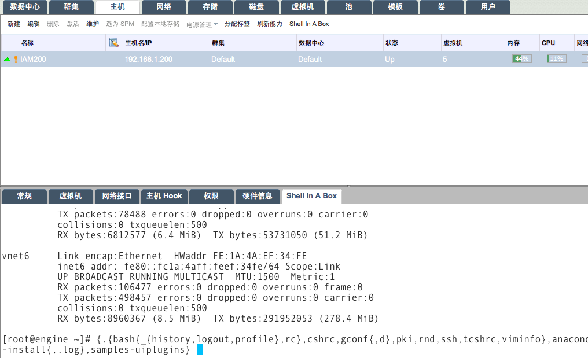
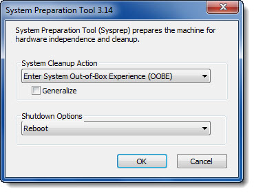

第三章 合适的虚拟化平台¶
3.1 虚拟化平台简介¶
Welcome to the core!
云计算目前主流实现有SaaS（Software-as-a-service）、PaaS（Platform-as-a-service）和IaaS（Infrastructure-as-a-service）。IaaS和PaaS都算作基础件，SaaS可以与基础件自由组合或者单独使用。
虚拟化技术已经很受重视而且被推到了一个浪尖。如今诸多开源虚拟化平台，比如XenServer、CloudStack、OpenStack、Eucalyptus、oVirt、OpenVZ、Docker、LXC等，我们都看花了眼，些许慌乱不知哪个适合自己了。
各平台实现方式：全虚拟化，半虚拟化，应用虚拟化。
IaaS云计算平台，综合来说具有以下特性：
- 虚拟化：虚拟化作为云计算平台的核心，是资源利用的主要形式之一。网络、存储、CPU乃至GPU等主要通过虚拟主机进行实体化。
- 分布式：分布式可利用共享的存储，通过网络将资源进行整合，是实现资源化的必备条件。
- 高可用：于规模庞大的云平台，提供存储、管理节点、重要服务的高度可用性是十分必要的。笔者在写这篇文章时，oVirt 3.4已经可以做到管理节点的高度可用。
- 兼容性：云计算平台众多，各家有各家的特点，同一数据中心部署不同的平台的可能性极大，因此，主要服务（比如虚拟网络、存储、虚机等）要有一定兼容性，比如oVirt可以利用OpenStack的Nouveau提供的虚拟网络、Foreman可以方便地在oVirt上部署新机器等。另外，也有DeltaCloud、libvirt等API，用户可以利用它们自由地实现自己的云综合管理工具。
- 资源池化：网络、存储、CPU或者GPU可以综合或者单独划分资源池，通过配额进行分配，从而保证其合理利用。
- 安全性：现代企业对于安全性的要求已经十分苛刻，除去传统数据加密、访问控制，甚至对于社会工程也要有一定防护能力；用户数据具有对非企业管理员具有防护性能，即使将虚拟机磁盘文件拷贝出来也不能直接获取其内容。
- 需求导向性：在计算水平上，优质资源最先提供给重要服务；服务水平上，平台具有可定制能力。
oVirt¶
oVirt目前两种部署方式：
| 管理独占一台物理机 |  |
| 高可用管理引擎 |
注解
常见名词
管理引擎（engine）：提供平台web管理、api，各种扩展服务，vdsm以及libvirt服务的重要节点。
宿主机（node/host）：为平台的的功能提供支持，主要是虚拟化能力。
数据中心（data center）：以数据共享方式（Shared/Local）划分的容器，可以包含多个集群。
存储域（storage domain）：平台所依赖的各种存储空间。
逻辑网络（logic network）：物理网络或者虚拟网络的抽象代表。
池（pool）：用于批量创建虚拟机。
集群策略（cluster policy）：宿主机/虚拟机运行或者迁移时所遵循的原则。
DWH/Reports：可以查看当前状态报告（需要ovirt-engine-reports）。
可信服务： 需要OpenAttestation 。
电源管理： 如果没有物理电源控制器，可以直接指定某一台主机为代理机，以构建更稳健的集群。
CloudStack¶
可能也不错，我没用过。
3.2 搭建oVirt管理引擎¶
搭建oVirt平台的步骤：
- 安装Redhat类操作系统（Redhat、CentOS、Fedora）
- 从yum安装oVirt，并执行engine-setup，或者直接从oVirt提供的 iso 进行安装
- 添加宿主机
- 添加存储域
- 创建虚拟机
系统准备¶
所有机器的SELINUX都设置为permissive。
/etc/selinux/config
SELINUX=permissive
# setenfoce permissive
如有需要，清除iptables规则。
# iptables -F
# service iptables save
每台机器上都要添加作为虚拟机运行的engine的FQDN，此处为ha.example.com。
# echo -e '192.168.10.100\tha.example.com' >> /etc/hosts
存储可以使用之前的glusterfs，方式为NFS_V3，注意将brick的权限设置为vdsm.kvm或者36:36。
注解
普通NFS服务器设置
因为考虑到NFS4的权限配置较为复杂，推荐NFS使用V3，修改nfsmount.conf中的Version为3。
# gluster volume create gluster-vol1 replica 2 \
gs1.example.com:/gluster_brick0 gs2.example.com:/gluster_brick0 \
gs3.example.com:/gluster_brick0 gs4.example.com:/gluster_brick0 \
gs1.example.com:/gluster_brick1 gs2.example.com:/gluster_brick1 \
gs3.example.com:/gluster_brick1 gs4.example.com:/gluster_brick1 force
由于管理端以及节点的网络服务依赖于 network 而非 NetworkManager ，我们需要启用前者禁用后者，在每一台服务器上都进行如下类似配置修改网络。
/etc/sysconfig/network-scripts/ifcfg-eth0
NAME=eth0
DEVICE=eth0
ONBOOT=yes
BOOTPROTO=static
# 注意修改此处的IP
IPADDR=192.168.10.101
NETMASK=255.255.255.0
GATEWAY=192.168.10.1
DNS1=192.168.10.1
# chkconfig NetworkManager off
# chkconfig network on
# service NetworkManager stop; service network restart
添加repo¶
注解
oVirt3.4.2 特别说明
2014年六七月的初次安装oVirt的用户可能会遇到添加宿主机失败的问题，暂时解决办法为卸载python-pthreading-0.1.3-1及以后的版本，安装老版本，比如 ftp://ftp.icm.edu.pl/vol/rzm2/linux-fedora/linux/epel/6/i386/python-pthreading-0.1.3-0.el6.noarch.rpm ，再尝试安装vdsm并添加宿主机。
使用rpm：
# yum localinstall http://plain.resources.ovirt.org/releases/ovirt-release/ovirt-release34.rpm
# yum install ovirt-hosted-engine-setup
或者手动添加：
[ovirt-stable]
name=Latest oVirt Releases
baseurl=http://resources.ovirt.org/releases/stable/rpm/EL/$releasever/
enabled=1
skip_if_unavailable=1
gpgcheck=0
[ovirt-3.4-stable]
name=Latest oVirt 3.4.z Releases
baseurl=http://resources.ovirt.org/releases/3.4/rpm/EL/$releasever/
enabled=1
skip_if_unavailable=1
gpgcheck=0
[epel]
name=Extra Packages for Enterprise Linux 6 - $basearch
#baseurl=http://download.fedoraproject.org/pub/epel/6/$basearch
mirrorlist=https://mirrors.fedoraproject.org/metalink?repo=epel-6&arch=$basearch
failovermethod=priority
enabled=1
gpgcheck=0
[ovirt-glusterfs-epel]
name=GlusterFS is a clustered file-system capable of scaling to several petabytes.
baseurl=http://download.gluster.org/pub/gluster/glusterfs/LATEST/EPEL.repo/epel-$releasever/$basearch/
enabled=1
skip_if_unavailable=1
gpgcheck=0
[ovirt-glusterfs-noarch-epel]
name=GlusterFS is a clustered file-system capable of scaling to several petabytes.
baseurl=http://download.gluster.org/pub/gluster/glusterfs/LATEST/EPEL.repo/epel-$releasever/noarch
enabled=1
skip_if_unavailable=1
gpgcheck=0
从下面两种方式中选择之一进行搭建
搭建普通oVirt虚拟化平台¶
笔者写此文时oVirt已经更新到3.4。
在此，我们会用到之前创建的distributed-replicated存储，这样可用保证系统服务的高度可用性有所提高。
对于初次使用oVirt的用户，建议使用此种搭建方式，太折腾的话就吓走好多目标读者了 。
使用之前的四台机器，分别为gs1.example.com，gs2.example.com，gs3.example.com和gs4.example.com，其中，将gs1作为管理机安装ovirt-engine，其余三台作为节点（node），存储使用已经创建好的glusterfs。
在gs1上运行如下命令。
# yum install ovirt-engine
# engine-setup --offline
[ INFO ] Stage: Initializing
[ INFO ] Stage: Environment setup
Configuration files: ['/etc/ovirt-engine-setup.conf.d/10-packaging.conf']
Log file: /var/log/ovirt-engine/setup/ovirt-engine-setup-20140508054649.log
Version: otopi-1.2.0 (otopi-1.2.0-1.el6)
[ INFO ] Stage: Environment packages setup
[ INFO ] Stage: Programs detection
[ INFO ] Stage: Environment setup
[ INFO ] Stage: Environment customization
--== PRODUCT OPTIONS ==--
--== PACKAGES ==--
--== NETWORK CONFIGURATION ==--
Host fully qualified DNS name of this server [gs1.example.com]:
Setup can automatically configure the firewall on this system.
Note: automatic configuration of the firewall may overwrite current settings.
Do you want Setup to configure the firewall? (Yes, No) [Yes]:
The following firewall managers were detected on this system: iptables
Firewall manager to configure (iptables): iptables
[ INFO ] iptables will be configured as firewall manager.
--== DATABASE CONFIGURATION ==--
Where is the Engine database located? (Local, Remote) [Local]:
Setup can configure the local postgresql server automatically for the engine to run. This may conflict with existing applications.
Would you like Setup to automatically configure postgresql and create Engine database, or prefer to perform that manually? (Automatic, Manual) [Automatic]:
--== OVIRT ENGINE CONFIGURATION ==--
Application mode (Both, Virt, Gluster) [Both]:
Default storage type: (NFS, FC, ISCSI, POSIXFS) [NFS]:
Engine admin password:
Confirm engine admin password:
--== PKI CONFIGURATION ==--
Organization name for certificate [example.com]:
--== APACHE CONFIGURATION ==--
Setup can configure apache to use SSL using a certificate issued from the internal CA.
Do you wish Setup to configure that, or prefer to perform that manually? (Automatic, Manual) [Automatic]:
Setup can configure the default page of the web server to present the application home page. This may conflict with existing applications.
Do you wish to set the application as the default page of the web server? (Yes, No) [Yes]:
--== SYSTEM CONFIGURATION ==--
Configure WebSocket Proxy on this machine? (Yes, No) [Yes]:
Configure an NFS share on this server to be used as an ISO Domain? (Yes, No) [Yes]: no
--== MISC CONFIGURATION ==--
--== END OF CONFIGURATION ==--
[ INFO ] Stage: Setup validation
--== CONFIGURATION PREVIEW ==--
Engine database name : engine
Engine database secured connection : False
Engine database host : localhost
Engine database user name : engine
Engine database host name validation : False
Engine database port : 5432
PKI organization : example.com
Application mode : both
Firewall manager : iptables
Update Firewall : True
Configure WebSocket Proxy : True
Host FQDN : gs1.example.com
Datacenter storage type : nfs
Configure local Engine database : True
Set application as default page : True
Configure Apache SSL : True
Please confirm installation settings (OK, Cancel) [OK]: ok
[ INFO ] Stage: Transaction setup
[ INFO ] Stopping engine service
[ INFO ] Stopping websocket-proxy service
[ INFO ] Stage: Misc configuration
[ INFO ] Stage: Package installation
[ INFO ] Stage: Misc configuration
[ INFO ] Initializing PostgreSQL
[ INFO ] Creating PostgreSQL 'engine' database
[ INFO ] Configuring PostgreSQL
[ INFO ] Creating Engine database schema
[ INFO ] Creating CA
[ INFO ] Configuring WebSocket Proxy
[ INFO ] Generating post install configuration file '/etc/ovirt-engine-setup.conf.d/20-setup-ovirt-post.conf'
[ INFO ] Stage: Transaction commit
[ INFO ] Stage: Closing up
--== SUMMARY ==--
SSH fingerprint: 1B:FD:08:A2:FD:83:20:8A:65:F5:0D:F6:CB:BF:46:C7
Internal CA 28:7E:D6:6B:F7:F2:6C:B5:60:27:44:C3:7F:3C:22:63:E5:68:DD:F4
Web access is enabled at:
http://gs1.example.com:80/ovirt-engine
https://gs1.example.com:443/ovirt-engine
Please use the user "admin" and password specified in order to login into oVirt Engine
--== END OF SUMMARY ==--
[ INFO ] Starting engine service
[ INFO ] Restarting httpd
[ INFO ] Generating answer file '/var/lib/ovirt-engine/setup/answers/20140508054842-setup.conf'
[ INFO ] Stage: Clean up
Log file is located at /var/log/ovirt-engine/setup/ovirt-engine-setup-20140508054649.log
[ INFO ] Stage: Pre-termination
[ INFO ] Stage: Termination
[ INFO ] Execution of setup completed successfully
至此，管理节点安装结束，参考 3.3 添加节点以及存储域 加入节点以及存储域。
搭建管理端高可用oVirt（hosted engine）¶
高可用，我们可以这么划分：
- 存储的高可用：传统存储使用DRBD/Heartbeat或者独立的存储设备保证高可用，在灵活性、可扩展性、成本上都有一定局限。在与主机同台使用Ceph或者Glusterfs可以较好地保证资源充分利用地同时，又满足了高度可用的要求。
- 管理高可用：因为比如oVirt、OpenStack这种拥有大型数据库的设施不像存储设施那样高效的同步，需要独立的管理运行在集群中的某一台机器上来同步集群消息，所以，管理端的高可用也是十分必要的。
- 虚拟机/服务高可用：虚拟机在宕机时可自动重启，在主机资源紧张时可用迁移到其他负载较低的主机上，从而保证服务的质量以及连续性。
- 宿主机的CPU架构建议选择Westmere（Westmere E56xx/L56xx/X56xx）、Nehalem（Intel Core i7 9xx）、Penryn（Intel Core 2 Duo P9xxx）或者Conroe（Intel Celeron_4x0）中的之一。
- CPU Family table 参阅
- Intel Architecture and Processor Identification With CPUID Model and Family Numbers
- 建议参考第11节提前安装含有oVirt管理的虚拟机，硬盘格式为RAW，从而在安装管理机时作为OVF导入或者覆盖虚拟磁盘，减少失败风险时间。
安装ovirt-hosted-engine-setup，并回答一些问题，注意高亮部分：
# hosted-engine --deploy
[ INFO ] Stage: Initializing
Continuing will configure this host for serving as hypervisor and create a VM where you have to install oVirt Engine afterwards.
Are you sure you want to continue? (Yes, No)[Yes]: yes
[ INFO ] Generating a temporary VNC password.
[ INFO ] Stage: Environment setup
Configuration files: []
Log file: /var/log/ovirt-hosted-engine-setup/ovirt-hosted-engine-setup-20140508182241.log
Version: otopi-1.2.0 (otopi-1.2.0-1.el6)
[ INFO ] Hardware supports virtualization
[ INFO ] Bridge ovirtmgmt already created
[ INFO ] Stage: Environment packages setup
[ INFO ] Stage: Programs detection
[ INFO ] Stage: Environment setup
[ INFO ] Stage: Environment customization
--== STORAGE CONFIGURATION ==--
During customization use CTRL-D to abort.
Please specify the storage you would like to use (nfs3, nfs4)[nfs3]:
# 此处的存储域只存储hosted-engine的相关文件，不作为主数据域
# 建议挂载gluster的nfs时使用localhost:data形式
Please specify the full shared storage connection path to use (example: host:/path): 192.168.10.101:/gluster-vol1/ovirt_data/hosted_engine
[ INFO ] Installing on first host
Please provide storage domain name. [hosted_storage]:
Local storage datacenter name is an internal name and currently will not be shown in engine's admin UI.Please enter local datacenter name [hosted_datacenter]:
--== SYSTEM CONFIGURATION ==--
--== NETWORK CONFIGURATION ==--
iptables was detected on your computer, do you wish setup to configure it? (Yes, No)[Yes]: no
Please indicate a pingable gateway IP address [192.168.10.1]:
--== VM CONFIGURATION ==--
# 虚拟engine的安装方式
Please specify the device to boot the VM from (cdrom, disk, pxe) [cdrom]:
The following CPU types are supported by this host:
- model_Conroe: Intel Conroe Family
Please specify the CPU type to be used by the VM [model_Conroe]:
Please specify path to installation media you would like to use [None]: /tmp/centos.iso
Please specify the number of virtual CPUs for the VM [Defaults to minimum requirement: 2]:
Please specify the disk size of the VM in GB [Defaults to minimum requirement: 25]:
You may specify a MAC address for the VM or accept a randomly generated default [00:16:3e:59:9b:e2]:
Please specify the memory size of the VM in MB [Defaults to minimum requirement: 4096]: 4096
Please specify the console type you would like to use to connect to the VM (vnc, spice) [vnc]:
--== HOSTED ENGINE CONFIGURATION ==--
Enter the name which will be used to identify this host inside the Administrator Portal [hosted_engine_1]:
Enter 'admin@internal' user password that will be used for accessing the Administrator Portal:
Confirm 'admin@internal' user password:
Please provide the FQDN for the engine you would like to use.
This needs to match the FQDN that you will use for the engine installation within the VM.
Note: This will be the FQDN of the VM you are now going to create,
it should not point to the base host or to any other existing machine.
Engine FQDN: ha.example.com
[WARNING] Failed to resolve ha.example.com using DNS, it can be resolved only locally
Please provide the name of the SMTP server through which we will send notifications [localhost]:
Please provide the TCP port number of the SMTP server [25]:
Please provide the email address from which notifications will be sent [root@localhost]:
Please provide a comma-separated list of email addresses which will get notifications [root@localhost]:
[ INFO ] Stage: Setup validation
--== CONFIGURATION PREVIEW ==--
Engine FQDN : ha.example.com
Bridge name : ovirtmgmt
SSH daemon port : 22
Gateway address : 192.168.10.1
Host name for web application : hosted_engine_1
Host ID : 1
Image size GB : 25
Storage connection : 192.168.10.101:/gluster-vol1/ovirt_data/hosted_data/
Console type : vnc
Memory size MB : 4096
MAC address : 00:16:3e:59:9b:e2
Boot type : cdrom
Number of CPUs : 2
ISO image (for cdrom boot) : /tmp/centos.iso
CPU Type : model_Conroe
Please confirm installation settings (Yes, No)[No]: yes
[ INFO ] Generating answer file '/etc/ovirt-hosted-engine/answers.conf'
[ INFO ] Stage: Transaction setup
[ INFO ] Stage: Misc configuration
[ INFO ] Stage: Package installation
[ INFO ] Stage: Misc configuration
[ INFO ] Configuring libvirt
[ INFO ] Configuring VDSM
[ INFO ] Starting vdsmd
[ INFO ] Waiting for VDSM hardware info
[ INFO ] Waiting for VDSM hardware info
[ INFO ] Waiting for VDSM hardware info
[ INFO ] Waiting for VDSM hardware info
[ INFO ] Creating Storage Domain
[ INFO ] Creating Storage Pool
[ INFO ] Connecting Storage Pool
[ INFO ] Verifying sanlock lockspace initialization
[ INFO ] Initializing sanlock lockspace
[ INFO ] Initializing sanlock metadata
[ INFO ] Creating VM Image
[ INFO ] Disconnecting Storage Pool
[ INFO ] Start monitoring domain
[ INFO ] Configuring VM
[ INFO ] Updating hosted-engine configuration
[ INFO ] Stage: Transaction commit
[ INFO ] Stage: Closing up
The following network ports should be opened:
tcp:5900
tcp:5901
udp:5900
udp:5901
An example of the required configuration for iptables can be found at:
/etc/ovirt-hosted-engine/iptables.example
In order to configure firewalld, copy the files from
/etc/ovirt-hosted-engine/firewalld to /etc/firewalld/services
and execute the following commands:
firewall-cmd -service hosted-console
[ INFO ] Creating VM
You can now connect to the VM with the following command:
/usr/bin/remote-viewer vnc://localhost:5900
Use temporary password "2067OGHU" to connect to vnc console.
Please note that in order to use remote-viewer you need to be able to run graphical applications.
This means that if you are using ssh you have to supply the -Y flag (enables trusted X11 forwarding).
Otherwise you can run the command from a terminal in your preferred desktop environment.
If you cannot run graphical applications you can connect to the graphic console from another host or connect to the console using the following command:
virsh -c qemu+tls://192.168.1.150/system console HostedEngine
If you need to reboot the VM you will need to start it manually using the command:
hosted-engine --vm-start
You can then set a temporary password using the command:
hosted-engine --add-console-password
The VM has been started. Install the OS and shut down or reboot it. To continue please make a selection:
(1) Continue setup - VM installation is complete
(2) Reboot the VM and restart installation
(3) Abort setup
# 需要在另外一个有图形能力的terminal中运行
# "remote-viewer vnc://192.168.10.101:5900"连接虚拟机。
# 完成engine-setup后关闭虚拟机；可以在虚拟机运行状态下执行
# "hosted-engine --add-console-password"更换控制台密码。
# 如果之前选择cdrom进行安装的话，此处可以在gs1上用已经安装好engine的
# 虚拟磁盘进行覆盖，类似
# "mount -t nfs 192.168.10.101:192.168.10.101:/gluster-vol1/ovirt_data/hosted_data/ /mnt; mv engine-disk.raw /mnt/ovirt_data/hosted_data/.../vm_UUID"
(1, 2, 3)[1]: 1
Waiting for VM to shut down...
[ INFO ] Creating VM
You can now connect to the VM with the following command:
/usr/bin/remote-viewer vnc://localhost:5900
Use temporary password "2067OGHU" to connect to vnc console.
Please note that in order to use remote-viewer you need to be able to run graphical applications.
This means that if you are using ssh you have to supply the -Y flag (enables trusted X11 forwarding).
Otherwise you can run the command from a terminal in your preferred desktop environment.
If you cannot run graphical applications you can connect to the graphic console from another host or connect to the console using the following command:
virsh -c qemu+tls://192.168.1.150/system console HostedEngine
If you need to reboot the VM you will need to start it manually using the command:
hosted-engine --vm-start
You can then set a temporary password using the command:
hosted-engine --add-console-password
Please install and setup the engine in the VM.
You may also be interested in installing ovirt-guest-agent-common package in the VM.
To continue make a selection from the options below:
(1) Continue setup - engine installation is complete
(2) Power off and restart the VM
(3) Abort setup
# 此处参考第一次操作，连接虚拟机控制台后进行"engine-setup --offline"以安装engine
(1, 2, 3)[1]: 1
[ INFO ] Engine replied: DB Up!Welcome to Health Status!
[ INFO ] Waiting for the host to become operational in the engine. This may take several minutes...
[ INFO ] Still waiting for VDSM host to become operational...
[ INFO ] The VDSM Host is now operational
Please shutdown the VM allowing the system to launch it as a monitored service.
# 到此，需要连接虚拟机控制台关闭虚拟机
The system will wait until the VM is down.
[ INFO ] Enabling and starting HA services
Hosted Engine successfully set up
[ INFO ] Stage: Clean up
[ INFO ] Stage: Pre-termination
[ INFO ] Stage: Termination
此时，运行”hosted-engine –vm-start”以启动虚拟管理机。
注解
- 若要重新部署
# vdsClient -s 0 list
# vdsClient -s 0 destroy <ID of the vm you get from the first command>
- 若要添加第二台机器
# yum install ovirt-hosted-engine-setup
# hosted-engine –deploy
然后指定存储路径即可自动判断此为第2+台机器。
3.3 添加节点以及存储域¶
你看到这的话应该已经有了一个数据中心、几个宿主机，也可能有一个虚拟机（engine），还差一个存储虚拟机镜像的地方就可以拥有基本的oVirt平台了。
添加节点（宿主机）¶
对于第11节的普通oVirt、第12节的ha平台，你可能需要添加更多节点以支持更好的SLA（service level agreement）。 添加节点目前有三种方式：
- 通过oVirt的节点ISO安装系统后加入。
- 直接将现有CentOS或者Fedora转化为节点（可以为当前管理机）。
- 指定使用外部提供者（Foreman）。
在此我们使用第二种方法。
添加存储域¶
存储域有3种，Data（数据域）、ISO（ISO域）、Export（导出域）。
其中，数据域是为必需，在创建任何虚拟机之前需要有一个可用的数据域用于存储虚拟磁盘以及快照文件；ISO域中可以存放ISO和VFD格式的系统镜像或者驱动文件，可在多个数据中心间共享；导出域用于导出或导入OVF格式的虚机。
而根据数据域的存储类型，我们有5种（NFS、POSIX兼容、Glusterfs、iSCSI、光纤）可选，在此，选择glusterfs导出的NFS。
注解
确保存储域目录被vdsm.kvm可读，即所有者为36:36，或者vdsm.kvm。 导出域在已加入数据中心后不可共享，如果它意外损坏，请参考 http://blog.lofyer.org/blog/2014/05/11/cloud-6-5-advanced-ovirt/ 手动修复，或者删除dom_md/metadata中的POOL_UUID的值以及_SHA_CKSUM行。 若要使用oVirt的gluster支持，请安装vdsm-gluster包。
3.4 连接虚拟机¶
虚拟机运行后，通过web界面，你可用使用以下几种方式连接虚拟机（可通过控制台选项进行修改）：
Spice-Html5¶
首先在服务器端打开spice代理：
# engine-setup --otopi-environment="OVESETUP_CONFIG/websocketProxyConfig=bool:True" # 如果未setup或者要在其他机器setup，可做此步 # yum install -y numpy # 安装numpy以加速转换。 # engine-config -s WebSocketProxy="192.168.10.100:6100" # service ovirt-websocket-proxy restart # service ovirt-engine restart连接之前，要信任以下两处https证书：
然后点击控制台按钮即可在浏览器的新标签中打开spice-html5桌面。
浏览器插件¶
对于Redhat系列系统，可安装spice-xpi插件；Windows系统可以安装SpiceX的控件。
本地客户端¶
访问 virt-manager官网 下载virt-viewer客户端，使用它打开下载到本地的console.vv文件。
spice proxy/gateway - squid代理¶
设置squid代理，将所有spice端口代理至3128端口。
# yum install squid修改/etc/squid/squid.conf。
# 第5行 acl localhost src 192.168.0.150 # 第41行修改为 http_access allow CONNECT Safe_ports #acl spice_servers dst 192.168.10.0/24 #http_access allow spice_servers启用squid服务。
# chkconfig squid on # service squid restart设置engine的SpiceProxy
# engine-config -s SpiceProxyDefault="http://FQDN_or_外网IP:3128" # service ovirt-engine restart可通过集群设置中设置所有宿主机的Spice代理，或者在虚拟机设置中单一设置某台虚拟机通过代理访问。
RDP插件（仅适用于Windows虚机及IE浏览器）¶
如果虚拟机的操作系统选择为Windows，并且内部启动了远程桌面服务，使用IE浏览器访问用户或者管理员入口时，可以启用RDP控件。
3.5 oVirt使用进阶¶
数据库修改非同步数据¶
如果出现网络错误，很有可能导致数据不同步，从而导致界面上虚拟机状态一直处于异常状态，这点OpenStack也有一样的缺点。连接引擎数据库，修改其中的vm_dynamic, image, vm_static等数据表即可。
engine-config参数配置¶
平台安装完以后，可用通过engine-config命令进行详细参数配置。
# 查看设置说明
# engine-config -l
# 查看当前设置
# engine-config -a
示例：重设管理员密码
# engine-config -s AdminPassword=interactive Please enter a password: # 密码 Please reenter password: # 密码
ovirt-shell与API¶
Restful API（Application User Interface）是oVirt的一大特点，用户可以通过它将其与第三方的界面或者应用进行集成。访问 http://192.168.10.100/api?rsdl 以获取其用法。
注解
访问API使用GET、POST、PUT、DELETE方法
获取内容时使用GET； 添加新内容或者执行动作使用POST； 更新内容使用PUT； 删除内容使用DELETE；
详细用法参考 http://www.ovirt.org/Api，SDK示例参考 http://www.ovirt.org/Testing/PythonApi
ovirt-shell则是全部使用Restful API写成的shell，通过它可以完成图形界面所不能提供的功能。
# ovirt-shell -I -u admin@internal -l https://192.168.10.100/api
============================================================================
>>> connected to oVirt manager 3.4.0.0 <<<
============================================================================
++++++++++++++++++++++++++++++++++++++++++++++++++++++++++++++++++++++++++++
Welcome to oVirt shell
++++++++++++++++++++++++++++++++++++++++++++++++++++++++++++++++++++++++++++
[oVirt shell (connected)]#
示例：使用ovirt-shell或者API来连接虚拟机。
- 获取虚拟机列表及其所在宿主机
- ovirtshell
# ovirt-shell -I -u admin@internal -l https://192.168.10.100/api -E "list vms" id : 124e8020-c9d7-4e86-81e1-0d4e28ff1cd4 name : aaa # ovirt-shell -I -u admin@internal -l https://192.168.10.100/api -E "show vm aaa" id : 124e8020-c9d7-4e86-81e1-0d4e28ff1cd4 name : aaa ... display-address : 192.168.10.100 ... display-port : 5912 display-secure_port : 5913 ...
- restapi
# curl -u admin@internal:admin https://192.168.10.100/api/vms | less <name>aaa</name> <description></description> ... <display> <type>spice</type> <address>192.168.10.100</address> <port>5912</port> <secure_port>5913</secure_port> <monitors>1</monitors> <single_qxl_pci>false</single_qxl_pci> <allow_override>false</allow_override> <smartcard_enabled>false</smartcard_enabled> </display> ...
- 获取/设置控制台密码
- ovirtshell
# ovirt-shell -I -u admin@internal -l https://192.168.10.100/api -E "action vm aaa ticket" # [oVirt shell (connected)]# action vm aaa ticket status-state : complete ticket-expiry: 7200 ticket-value : MfY9P5kpmNpw vm-id : 124e8020-c9d7-4e86-81e1-0d4e28ff1cd4
- restapi
# curl -k -u admin@internal:admin https://192.168.10.100/api/vms/124e8020-c9d7-4e86-81e1-0d4e28ff1cd4/ticket -X POST -H "Content-type: application/xml" -d '<action><ticket><expiry>120</expiry></ticket></action>' <?xml version="1.0" encoding="UTF-8" standalone="yes"?> <action> <ticket> <value>jRUqhrks6JiT</value> <expiry>120</expiry> </ticket> ... <status> <state>complete</state> </status> </action>
- 连接虚拟机
除了以上获取的显示端口、宿主机IP，我们需要额外获取一个根证书。
# wget http://192.168.10.100/ca.crt
- ovirt-shell
# ovirt-shell -I -u admin@internal -l https://192.168.10.100/api \ -E "console aaa"
- virt-viewer
# remote-viewer --spice-ca-file=ca.crt spice://192.168.10.100?port=5912&tls-port=5913&password=jRUqhrks6JiT
主机hooks¶
主机hooks位于各个宿主机上，用于扩展oVirt的平台功能，比如网络、USB设备、SRIOV等。原理是在某一事件触发时（比如虚拟机启动之前），修改libvirt启动XML文件、环境变量或者主机配置，从而改变qemu的启动参数。
更多hooks内容请参考 vdsm-hooks 。
示例：使用libvirt内部网络
- 准备所需文件。
拷贝 extnet_vnic.py 至/usr/libexec/vdsm/hooks/before_vm_start/，不要忘记添加可执行权限。
- 查看，添加libvirt网络。
# virsh net-list在 extnet_vnic.py 文件中 newnet = os.environ.get(‘extnet’) 前一行添加如下代码，替换其中的 default 为要使用的libvirt网络， 其他的hooks脚本多数可以这样修改，也可以在engine-config的CustomProperty中指定 ：
# 注意此处使用双引号 params = "default" # 同上部分粗体字，因为大部分hooks检查engine-config中的环境变量，简便起见，我直接在hooks脚本中设置了环境变量 os.environ.__setitem__("extnet",params)
- 虚拟机一定要添加网络配置，否则会启动失败，在虚拟机启动时，第一个网络配置文件会被替换为 default 网络。
注解
如果忘记了libvirt密码，可以用以下命令重置。
# saslpasswd2 -a libvirt root
第三方界面¶
oVirt现在自带的gwt界面对浏览器和客户的要求较高，有一些人由于这个原因抛弃它使用第三方的web界面，参考 oVirt Dash 、 ovirt sample-portals 。
使用virt-install安装系统¶
示例：
# virt-install \
--name centos7 \
--ram 2048 \
--disk path=/var/kvm/images/centos7.img,format=qcow2 \
--vcpus 2 \
--os-type linux \
--os-variant rhel7 \
--graphics none \
--console pty,target_type=serial \
--location 'http://mirrors.aliyun.com/centos/7/os/x86_64/' \
--extra-args 'console=ttyS0,115200n8 serial'
虚拟机文件系统扩容¶
oVirt 3.4 磁盘可以进行在线扩容，但是对于磁盘内的文件系统需要单独支持，在此列出常用Linux以及Windows扩容方法。
Linux文件系统扩容（镜像扩容后操作）
在镜像扩容后进行如下操作。
- 重写分区表
# fdisk /dev/sda > d > 3 > n > 3 > w 然后 # kpartprobe 或者 # reboot
- 在线扩容文件系统
# resize2fs /dev/sda3
Linux文件系统扩容（lvm）
在创建好一个新的分区或者一个新的磁盘后，将新空间(比如10G)添加到PV，VG，扩容LV，然后扩容文件系统。
# vgextend vg_livecd /dev/sdb # lvextend /dev/vg_livecd/lv_root -L +10G # resize2fs /dev/vg_livecd/lv_root
Linux文件系统扩容（libguestfs）
具体内容请参考 libguestfs site 。
- 检视磁盘
# virt-filesystem --all --long -h -a hda.img
- 创建待扩容磁盘副本，同时扩容10G（假设原磁盘大小为10G）
对于RAW格式：
# truncate -r hda.img hda-new.img # truncate -s +10G hda-new.img对于QCOW2等有压缩格式：
# qemu-img create -f qcow2 -o preallocation=metadata hda-new.img 20G
- 扩展分区尺寸
普通分区扩展，/boot分区扩容200M，其余全部给/分区：
# virt-resize --resize /dev/sda1=+200M --expand /dev/sda2 hda.img hda-new.imgLVM分区扩展，扩容lv_root逻辑卷：
# virt-resize --expand /dev/sda2 --LV-expand /dev/vg_livecd/lv_root hda.qcow2 hda-new.qcow2
FAT/NTFS扩容
XP使用Paragon Partion Manager；Windows 7 在磁盘管理中即可扩容。
P2V/V2P¶
V2V
在此以ESXi迁移至oVirt为例。
- 在oVirt上创建一个NFS导出域
- 安装libguestfs，并创建.netrc文件，文件内容为ESXi的登陆信息：
~/.netrc
machine 192.168.1.135 login root password 1234567
- 开始迁移，确保ESXi的虚拟机已正常关闭：
# virt-v2v -ic esx://192.168.1.135/?no_verify=1 -o rhev -os 192.168.1.111:/export --network mgmtnet myvm myvm_myvm: 100% [====================================================]D 0h04m48s virt-v2v: myvm configured with virtio drivers.
- 从导出域导入虚拟机并运行：
导入虚拟机：
运行虚拟机：

P2V
oVirt的P2V方式我所知的有三种，一是使用VMWare的P2V工具转化为VM以后，再通过virt-v2v转化为oVirt的VM，二是使用clonezilla或者ghost制作系统后，再将其安装到oVirt中，三则是使用virt-p2v工具。笔者在此使用virt-p2v工具示例，成文时只在CentOS 6.5以上版本测试，CentOS 7未测试，RHEL 7.1以上有此工具。
- 在服务器端安装所需包：
yum install -y virt-p2v virt-v2v
- 将/usr/share/virt-v2v/中的ISO文件dd到U盘或者烧录到光盘，然后在要转化的机器上启动。
- 修改服务器端/etc/virt-v2v.conf，修改rhevm的配置，形如：
<virt-v2v> <profile name="rhev-sparse"> <method>rhev</method> <storage format='qcow2' allocation='sparse'> nfs.example.com:/ovirt-export </storage> <network type="default"> <network type="network" name="ovirtmgmt"/> </network> </profile> </virt-v2v>
- 开始转换（我是使用libvirt的profile示例）
- 转换完成后关闭计算机，并修改虚拟机的配置以完全适应OS。
UI 插件¶
详细内容请参考 oVirt官网关于UI插件的介绍 以及附录部分内容，在此我仅使用ShellInABox举例，你可以考虑将上面的libguestfs扩容加进来，更多UI Plugin请 git clone git://gerrit.ovirt.org/samples-uiplugins.git 。
ShellInABox oVirt UI plugin
- 在宿主机上安装ShellInABox。
# yum install shellinabox # chkconfig shellinaboxd on修改shellinabox配置 OPTS ：
/etc/sysconfig/shellinaboxdOPTS="--disable-ssl --service /:SSH"
- 拷贝uiplugin文件并启动服务。
# git clone git://gerrit.ovirt.org/samples-uiplugins.git # cp -r samples-uiplugins/shellinabox-plugin/* /usr/share/ovirt-engine/ui-plugins/ # service shellinaboxd start # service ovirt-engine restart注解
shellinabox插件链接问题
由于3.3到3.4之后链接的变化，shellinabox.json中的 /webadmin/webadmin/plugin/ShellBoxPlugin/start.html 需要替换为 plugin/ShellBoxPlugin/start.html 。
注解
shellinabox的root登陆问题
echo -e “pts0npts1npts2” >> /etc/securetty
使用SysPrep/Cloud-Init重置虚拟机信息¶
初始化Redhat系列Linux
# touch /.unconfigured # rm -i /etc/ssh/ssh_host_* # echo "HOSTNAME=localhost.localdomain" >> /etc/sysconfig/network # rm -i /etc/udev/rules.d/70-persistent*删除 /etc/sysconfig/network-scripts/ifcfg-* 文件中的 HWADDR= 字段，删除 /var/log/* 、 /root/.log* ，然后关机即可。
修改密码
# virt-sysprep --root-password password:123456 -a os.img
初始化Windows 7

- 使用http://www.drbl-winroll.org工具批量修改。
- 使用位于 C:\Windows\system32\sysprep 目录下的工具。
与其他平台集成、与认证服务器集成¶
oVirt平台目前可以使用Foreman，OpenStack Network，OpenStack Image的部分功能，具体实施请参阅附录一内容。
与认证服务器集成时很有可能遇到各种问题，比如与AD集成时不能使用Administrator用户进行engine-manage-domains，与IPA集成时需要修改minss之类的参数，与LDAP集成时需要Kerberos或者使用3.5版本中的aaa认证插件。
后端（libvirt/qemu/kernel）优化¶
如果你觉得现有平台的性能达不到预期，或者有其他的需求，可以从以下几方面进行调节或优化。
- qemu ： 我写了 一系列qemu的脚本 ，你可以调节里面的参数直接启动虚拟机进行调试或者优化。
- libvirt ： libvirt 的目的是统一各种虚拟化后端的调用方式（kvm/xen/lxc/OpenVZ//VirtualBox/VMWare/Hyper-V等等），主要一个特性是用统一的描述文件来定义虚拟机配置（xml文件），在Linux下你可以使用 Virt Manager 进行调试，相关文档参考 libvirt ref 。
- kernel ： 基本上大部分的内核相关配置都可以通过 /sys 或者 /proc 进行调节，而针对内核所谓的“优化”，在非大规模部署的情况下，其优势很难体现出来，还有一方面，目前的KVM效率，CPU、内存管理、网络等方面都比较优秀，在I/O方面还有部分不足，可以在 VIRTIO 上进行相关的优化，还有开启 HugePage 等操作。